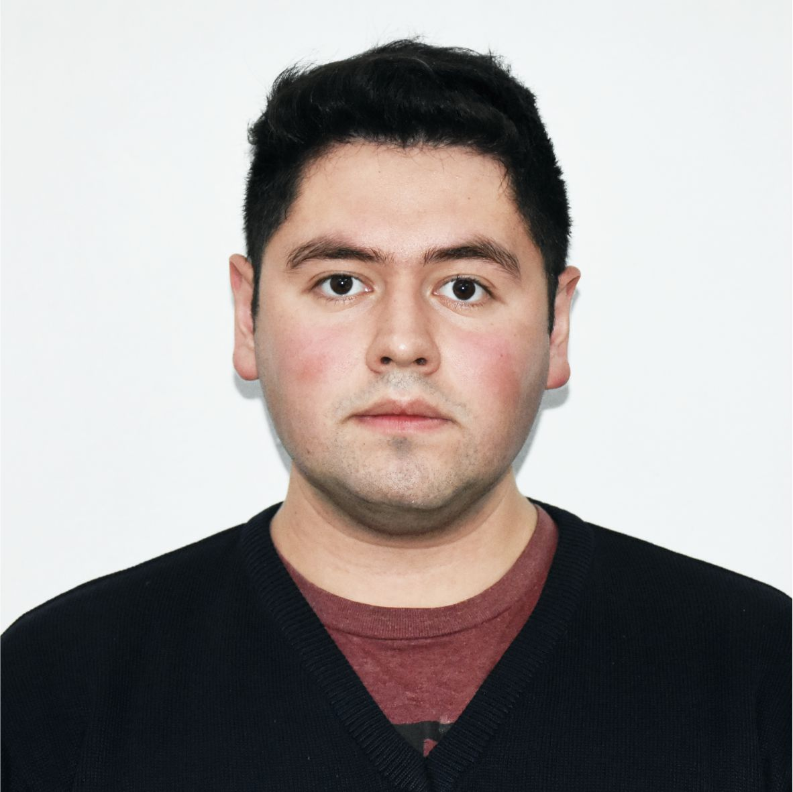

Juan Sosa
Docente de informática · Estudiante de programación
Enseño informática en el nivel secundario y soy estudiante de la Tecnicatura Universitaria en Programación, en la Universidad Tecnológica Nacional (UTN) San Rafael. Me interesa entender bien las cosas para poder explicarlas con claridad y llevar cada lenguaje que aprendo al aula.

class Juan {
String rol = "docente de informática";
String estudia = "Tecnicatura en Programación";
void aprender() {
compartir(); // lo que aprendo, lo llevo al aula
}
}Sobre mí
Tengo 25 años. Soy docente de nivel secundario en el área de informática y estudio la Tecnicatura Universitaria en Programación en la UTN San Rafael (cohorte 2026).
El Profesorado de Educación Secundaria en Informática despertó en mí el deseo de saber más sobre programación y sobre los distintos lenguajes, para crecer y poder transmitir ese conocimiento a las futuras generaciones.
Experiencia
Docente de nivel secundario, área de informática
Enseño informática en escuelas secundarias: lógica, programación y herramientas digitales.
Estudios
Tecnicatura Universitaria en Programación
Universidad Tecnológica Nacional, Facultad Regional San Rafael. Programación estructurada y orientada a objetos, lógica y trabajo colaborativo con Git.
Profesorado de Educación Secundaria en Informática
Instituto de Educación Superior N.º 9-011 “Del Atuel”.
Tecnologías
- Java
- Python
- PSeInt
- HTML
- CSS
- JavaScript
- Git
- GitHub
- NetBeans
- VS Code
Proyectos UTN

Minijuegos: Piedra, Papel o Tijera, Ta-Te-Ti y Ahorcado
Proyecto del equipo Syntax Error. Primero resolvimos la lógica en PSeInt y después pasamos los tres juegos a Java, aplicando estructuras de control y métodos.
PSeInt · Java · NetBeansPortafolio del grupo Syntax Error
Sitio web del equipo, armado entre todos con ramas y pull requests en GitHub y publicado en Netlify. Mi parte: mi tarjeta de presentación y mi foto.
HTML · CSS · JavaScript · Git Ver proyectoProyectos personales

GÉMINIS: catálogo web de ropa deportiva y urbana
Página web para la tienda de ropa de un amigo (gemiinis.sr, San Rafael). Tiene catálogo con filtros por categoría, fotos con opciones de color y un botón que abre WhatsApp con el mensaje del producto ya armado. Diseño adaptable a celular, publicado desde GitHub.
HTML · CSS · JavaScript · Git · GitHub Pages Ver proyecto